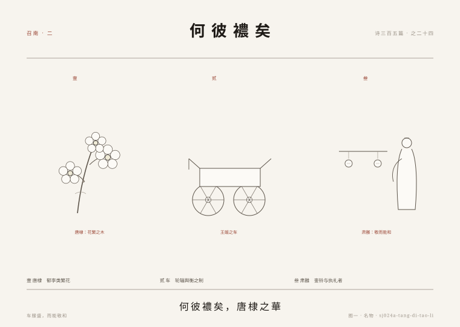
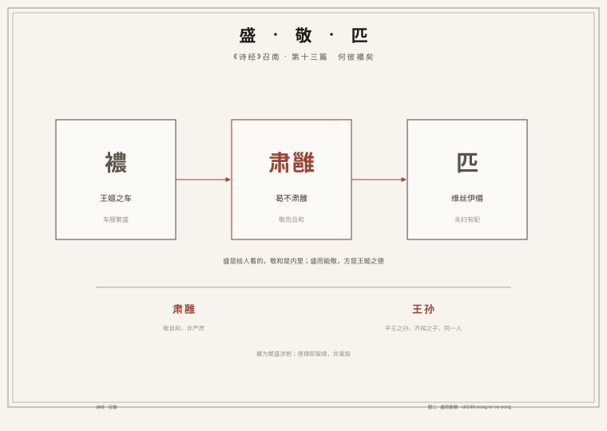

第二十四篇 何彼襛矣
召南 · 之二 SJ024
朗读 · 普通话
依经文原文朗读，章次不读出；配古琴底乐，不改速、不加拖腔。全库同一音色（豆包 TTS），非播音员录制。
一 解题
诗三判：
- 谁在说：一个看王姬出嫁的人。他一路惊叹车服之盛，忽然落到一句「肅雝」——盛归盛，态度却是敬且和。
- 说什么事：衣裳何等繁盛，像唐棣之花，像桃李；平王之孫、齊侯之子，王姬下嫁。末章以钓鱼为喻：丝绳相属，夫妇之合有其匹。
- 为何编在此：召南写婚嫁，前有鹊巢之备、死麕之礼；此篇写王姬之贵，车服最盛，而终以「肅雝」收束。盛而能敬，是此篇与夸富诗的分界。
《毛序》：「《何彼襛矣》，美王姬也。虽则王姬，亦下嫁于诸侯，车服不系其夫，下王后一等，犹执妇道，以成肅雝之德也。」——读作美王姬能执妇道。
朱子《诗集传》：「王姬下嫁于诸侯，车服之盛如此，而不敢挟贵以骄其夫家；故见其车者，知其能敬且和以执妇道也。」——朱子把「肅雝」落到不挟贵、能敬和。
本库的看法：骨在「盛而能敬」。
全篇前半铺陈襛盛——华、桃李、王姬之車；可一句「曷不肅雝」把盛气压住：车服是外，敬和是内。「平王之孫，齊侯之子」指的是同一人——周王的外孙女、齐侯的女儿，不是两个人分指。
二 经文
第一章
何彼襛矣，唐棣之華？曷不肅雝？王姬之車。
第二章
何彼襛矣，華如桃李？平王之孫，齊侯之子。
第三章
其釣維何？維絲伊緡。齊侯之子，平王之孫。
分章：毛传、朱子皆三章，章四句。一二章以花喻盛，末章换钓喻；第二、三章末二句倒文互见——「平王之孫，齊侯之子」先孙后子，末章先子后孙，往复申说同一人。
## 三 韵读
| 一 |
華、車 |
魚部 |
| 二 |
李、子 |
之部 |
| 三 |
緡、孫 |
真部 |
一章魚部开阔，写花与车的盛；二章之部收窄，落到人；三章真部收束，末句「平王之孫」回旋到身份上，是全篇落脚声。
四 字义与名物
- 襛（nóng）——繁盛、浓艳之貌；一说衣厚。不是「秾」的俗写，字从衣，本义衣裳之盛。
- 唐棣（táng
dì）——又作棠棣，郁李一类，花繁而白。不是「棠梨」，亦非后世说的郁李异种。
- 华——花。
- 曷——何、怎么。不——岂、何不。
- 肅雝（sù
yōng）——敬而且和。肃，敬；雝，和。不是「严肃」，是敬中有和。
- 王姬——周王之女。姬，周姓。
- 桃李——桃花李花，喻颜色之盛。
- 平王之孫——周平王之孫女（王姬）。齊侯之子——齐侯之女。二者同指一人。
- 钓——钓鱼。
- 维——发语词。伊——语助。
- 缗（mín）——合丝而成的钓绳。丝缗相属，喻夫妇相配。
五 今译
第一章
那衣裳何等繁盛？像唐棣的花。怎能不肃敬和柔？那是王姬的车。
第二章
那衣裳何等繁盛？花像桃李一般。她是平王的孙女，齐侯的女儿。
第三章
钓鱼用什么？用丝合成的绳。她是齐侯的女儿，平王的孙女。
译注：「曷不」译「怎能不」，是反问加强；「平王之孫，齊侯之子」两章互文，同指一人，译文不拆成两人。「缗」译「丝合成的钓绳」，取丝缕相属之喻。
六 章旨
一章：车之盛。以唐棣之華起兴，落到王姬之車；「肅雝」一句是盛中的节度。
二章：人之贵。華如桃李，点明身份：王孙、齊侯之子。
三章：匹之喻。以钓丝为喻，丝必合股，夫妇必有配；末二句倒文重申。
三章两层：前两章写「外之盛」（车服、颜色、身份），末章写「内之匹」（丝缗相属）。盛是给人看的，匹是自己的事。
七 诗教
- 赋：铺陈车服颜色，间以钓喻；直陈其事而丽辞相附，是赋。
- 观：可观一「敬」。贵如王姬，下嫁而不骄；盛服之下，「肅雝」二字才是全篇落点。
- 群：王姬之嫁，连及周、齐两姓；一车之盛，是两姓之好。
- 怨：无怨。全篇皆叹美，无一句刺；唯「曷不肅雝」微含规意——盛者尤须敬。
八 分寸与边界
- 不可把「平王之孫，齊侯之子」读作两个人。孙、子互文同指一女；拆成两人，末章倒文就不可解。
- 不可把「肅雝」解作严肃冷硬。肃是敬，雝是和，二者相济；只取「肃」便失了雝意。
- 不可把唐棣当作棠梨或普通桃李。唐棣是郁李类花树，与第二章「桃李」是两喻。
- 不可把此篇读作夸富诗。车服之盛只是起兴，骨在「盛而能敬」；只赞衣裳，诗就浅了。
- 不可把「襛」只解作衣厚。它是繁盛浓艳之貌，衣厚是一说，不足以尽之。
九 存疑
- 王姬所嫁何人：毛序以为下嫁诸侯，朱子沿之；具体为齊侯之子还是某国，旧说纷纭，本库不指实。
- 「平王」何人：一说周平王，一说「平正之王」（文王）。本库从周平王一说，余说存录。
- 唐棣之物种：郁李、棠棣、栘𣏌诸说不一；本库只取「花繁之木」。
- 末章钓喻所指：一说喻夫妇之合，一说喻王姬之配诸侯。本库取夫妇相配。
- 「襛」字异文：一作「秾」，从禾；毛诗从衣。本库从毛作「襛」。
十 跨典
- 《召南·鹊巢》——同卷婚诗。彼言百两之迎，此言王姬之車；一为诸侯之礼，一为王姬之贵。
- 《周南·桃夭》「灼灼其华」——同以花喻婚嫁之盛；彼言宜室宜家，此言肅雝能敬。
- 《诗经·小雅·桑扈》「兕觥其觩，旨酒思柔」——「肅雝」之德，亦见于《雅》之宾贤。
- 《左传·庄公十一年》「王姬归齐」——王姬下嫁齐侯，古有其事，可与此篇相参。
- 《礼记·郊特牲》「妇人从人者也」——「齊侯之子，平王之孫」之身份倒文，正见古之婚配重两姓。
十一 双卡与图
双卡五对：
| 襛（繁盛） |
肅雝（敬和） |
| 唐棣 |
桃李 |
| 王之孙 |
侯之子（同一人） |
| 丝（钓丝） |
缗（合绳） |
| 车（外盛） |
匹（内合） |

图一 · 唐棣·桃李·丝缗 名物图

图二 · 盛而能敬 义理图
读图三处：
- 唐棣花成簇，桃李花成枝：三格两喻花木，簇与枝要分得开；不可画成同一种花。
- 王姬之車只画轮廓：盛在车服，不在人物容貌；车以线描，不施彩绘。
- 丝缗是合股之绳：末章钓喻，画一缕丝绞成绳；绳之相属，即夫妇相配之象。